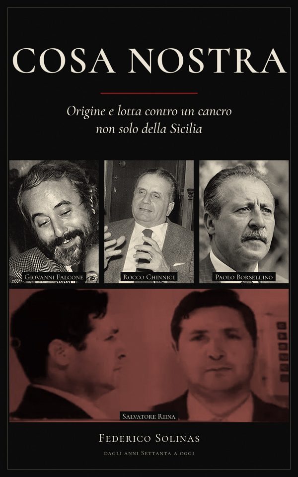

Perché questa raccolta
Mi chiamo Federico Solinas e sono invalido civile all'80%.
Ho donato quello che avevo alla raccolta per il mio amico Francesco, 19 anni, malato di condrosarcoma, per il suo viaggio di cura a Firenze. L'ho fatto insieme ad alcune associazioni, mettendo la salute di Francesco prima delle mie necessità.
Ora ho bisogno di 250 € per il cibo e per prendermi cura dei miei animali.
I 250 € servono per il cibo, il mantenimento degli animali (cocorite, acquari, conigli), l'affitto e i farmaci per la terapia del dolore.
Ho continuato a lavorare in cucina contro il parere medico: ne è nata una lesione del tendine femorale e, poiché non mi sono fermato, un distacco parziale del tendine. Alla fine il contratto non mi è stato rinnovato. Ho l'esenzione, ma sui farmaci pago comunque i ticket.
Ho inviato tre PEC agli assistenti sociali del mio comune. L'unica risposta è stata: «Ti fa onore che tu voglia lavorare». Questo è stato l'aiuto ricevuto.
A casa con me ci sono due acquari, due cocorite e due conigli. Me li ha lasciati la mia ex compagna quando ha detto che doveva ristrutturare casa, e non è più tornata. Gli animali stanno benissimo: ho sempre pensato prima a loro, anche quando io rinunciavo a mangiare.
Non mi piace farmi aiutare. Quando tornerò a lavorare, restituirò tutto.
Grazie di cuore.
— Federico
La raccolta per Francesco è stata completata: solinasfederic261288-arch.github.io/raccolta-francesco
Come donare
Bonifico su Revolut
- Intestatario
- Federico Solinas
- IBAN
- LT22 3250 0455 6460 3133
- Causale
- Aiuto Federico
Un'alternativa: il mio libro

Ho scritto un ebook: «Cosa Nostra: Origine e lotta contro un cancro non solo della Sicilia», dagli anni Settanta a oggi. È in fase di pubblicazione su Amazon Kindle, al prezzo di 6,99 €. Se preferisci, invece di donare puoi aiutarmi comprando il libro: appena sarà disponibile metterò qui il link.
La mia storia
Nel 2012 a Firenze mi hanno operato per un tumore maligno raro, il condrosarcoma a cellule chiare: è stato il primo caso nella mia regione. Mi hanno tolto la testa e il collo del femore e mi hanno impiantato una megaprotesi all'anca sinistra.
Nel luglio 2021 mi sono operato al Rizzoli di Bologna all'anca destra, per coxartrosi e conflitto femoro-acetabolare di tipo CAM. Era piena pandemia e ho pagato di tasca mia, perché se avessi aspettato avrei rischiato la protesi anche a destra. L'operazione è riuscita e la coxartrosi si è fermata.
Nel dicembre 2023 ho subito un nuovo intervento all'anca sinistra per metallosi e uno pseudotumore: lo stelo in titanio è rimasto, la testa in metallo è stata sostituita con una in ceramica. La prognosi era di sei mesi; dopo un mese camminavo già, perché il mio unico pensiero era tornare a lavorare in cucina e non farmi mantenere.
Vivevo in affitto con la mia ex compagna, Maria, e dividevamo affitto, spesa e le spese per gli animali che lei aveva voluto. Alla prima piccola difficoltà economica della mia vita ho chiesto un prestito, per non farle pagare la sua metà dell'affitto. Avevamo deciso di stringere la cinghia: io per me non ho più comprato nulla e pensavo solo alla casa e agli animali. Poi ho scoperto che lei si era comprata elettrodomestici di ultima generazione. Poco dopo ha detto che doveva andare a ristrutturare una casa di sua proprietà e non è più tornata.
Mi sono ritrovato da solo con l'affitto, le spese di casa, gli animali e le rate del prestito. Ho usato i miei risparmi, poi la carta di credito, e il conto è andato in rosso. Dovevo scegliere tra me e gli animali e la mia reputazione con le banche: ho scelto la vita degli animali, che non hanno nessuna colpa.
A giugno 2026 sono tornato a lavorare in un ristorante contro il parere medico. Dopo un mese il tendine ha ceduto e si è infiammato. Mi hanno consigliato un mese di stop, ma l'ho rifiutato sotto la mia responsabilità e ho continuato tra dolori atroci e terapie pesanti. Il lavoro è aumentato, e io, che come cuoco sono sempre stato veloce, ho accelerato. Dopo quasi un altro mese il tendine ha smesso di funzionare: la risonanza ha mostrato un distacco parziale e una lesione estesa. Mi sono dovuto fermare per forza, e il contratto non mi è stato rinnovato perché sono ancora in malattia.
Tutto quello che ho me lo sono guadagnato lavorando, senza mai chiedere aiuto a nessuno. Due settimane fa un ragazzo di 19 anni, Francesco, ha ricevuto la mia stessa diagnosi: era il secondo caso. Ancora prima di aprire la raccolta per lui gli avevo già dato tutto quello che potevo; poi ho aperto la raccolta fondi, che ha raggiunto l'obiettivo. Io non voglio essere aiutato: aiuto gli altri quando posso, e sto ripagando i miei debiti con i miei soldi.
Questo è Federico: un essere umano, non un algoritmo.
Il mio conto oggi

Questo è il mio conto corrente oggi. Da quando la mia ex compagna se n'è andata, ho dovuto indebitarmi con la carta di credito per pagare affitto, casa e animali. Ho problemi motori e abito in campagna: da un mese non esco di casa, perché non ho un euro.
Ho sempre aiutato tutti, anche quando non avevo niente. So che qualcuno può non credermi, perché ci ho messo la faccia per aiutare Francesco, ma ho ogni documento che attesta la verità.
La persona che mi diceva «ti amo nel bene e nel male», proprio nel male è sparita.
Ho anche una figlia, Alice, nata da una relazione precedente: la sua mamma non è la mia ex compagna. Ho conosciuto Alice quando aveva già quattro anni e l'ho vista solo due volte; poi la mamma ha trovato un altro compagno ed è sparita. Per non far passare la bambina per i tribunali, due anni fa ho iniziato a mandarle ogni mese 600 € con un bonifico istantaneo, più della metà del mio stipendio. Finché un giorno il bonifico è tornato indietro: la mamma aveva cambiato città, conto e numero di telefono.
Non so più se aiutare sia giusto. Credevo che l'amore si vedesse nelle difficoltà. Non pretendo niente: sono contento che abbiate aiutato Francesco.
Documentazione medica
A novembre ho una visita ortopedico-oncologica a Firenze, all’ospedale Careggi. Qui sotto il certificato medico (indirizzo e telefono oscurati).


Trasparenza
Ogni euro oltre i 250 € sarà restituito oppure donato a Francesco.